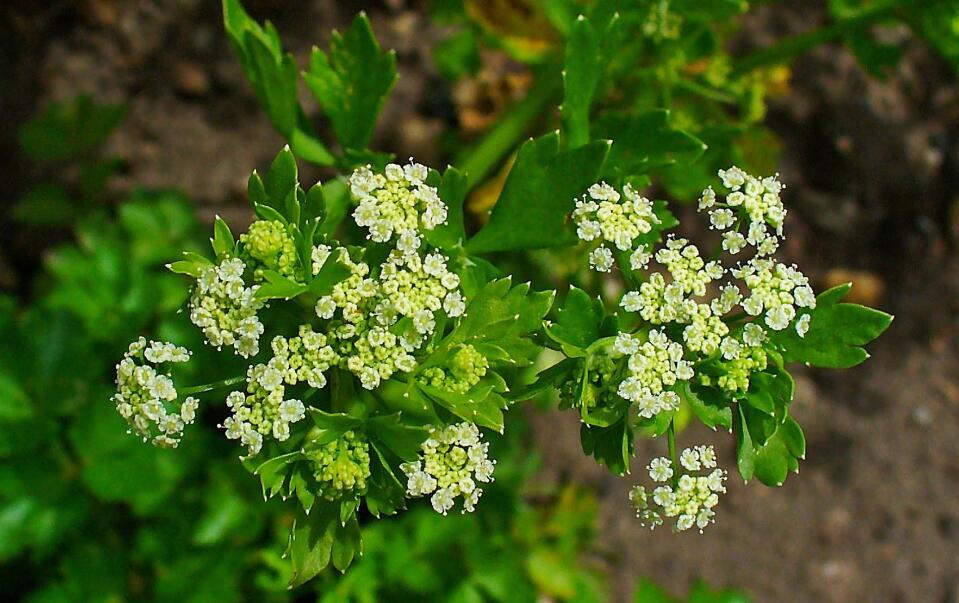

旱芹(伞形科芹属植物)
旱芹(学名：Apium graveolensL.)是伞形科芹属植物。二年生或多年生草本，高15-150厘米，有强烈香气。根圆锥形，支根多数，褐色。茎直立，光滑。根生叶有柄，柄长2-26厘米，基部略扩大成膜质叶鞘;叶片轮廓为长圆形至倒卵形。复伞形花序顶生或与叶对生，花序梗长短不一，有时缺少，通常无总苞片和小总苞片。分生果圆形或长椭圆形，长约1.5毫米，宽1.5-2毫米，果棱尖锐，合生面略收缩;每棱槽内有油管1，合生面油管2，胚乳腹面平直。花期4-7月。

分布于欧洲、亚洲、非洲及美洲。中国南北各省区均有栽培。供作蔬菜。旱芹为耐湿性蔬菜，喜冷凉湿润的环境条件，生长适温为15-20℃;对光照要求不严格，根系细而浅，不耐干旱，宜在疏松、通透性良好的中性土壤中生长。
果实可提取芳香油，作调合香精。旱芹是常用蔬菜之一。旱芹味甘、苦，性凉，归肺、胃、肝经，有平肝降压、镇静安神、利尿消肿、防癌抗癌、养血补虚之功效，可辅助治疗高血压、眩晕头痛、面红耳赤、血淋、痈肿等症。
食用芹菜（食用的旱芹）是由野生的芹菜栽培驯化来的。野生芹菜味苦，不可食用，最初因具有特殊的香味以及外观被当作观赏性植物，中世纪的医生认为旱芹具有安神助眠的功能，把它当作一种药物使用。17世纪20年代左右，法国人开始将旱芹的叶子作为香料使用，经过一个世纪的种植和改良，旱芹的茎秆变得更加粗壮，人们开始将旱芹作为一种蔬菜食用。
本站文章均来自互联网，仅供学习参考，如有侵犯您的版权，请邮箱联系我们删除！
 上一篇
上一篇